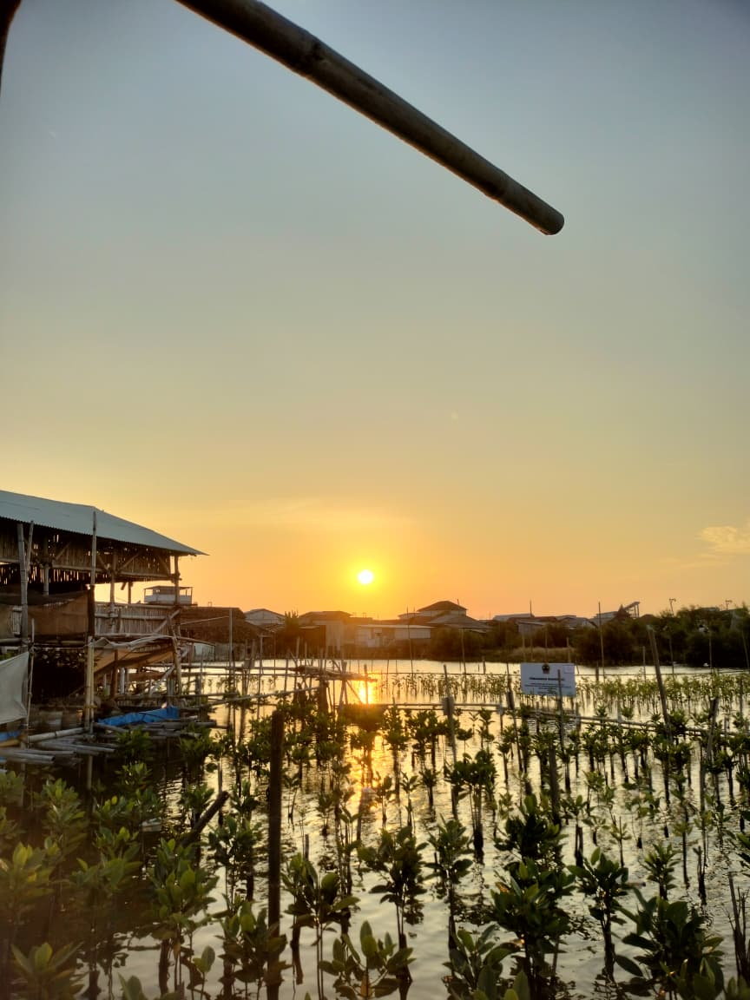
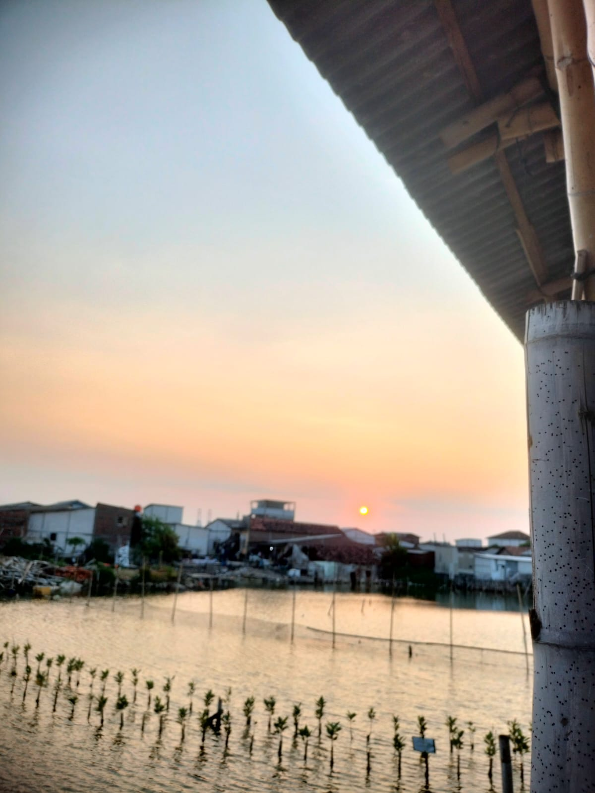

PPK Ormawa HIMAAKSI • Universitas Muhammadiyah Semarang
Desa Mangrove
Tambak Lorok
Program Kreativitas Kegiatan Organisasi Mahasiswa yang berdedikasi pada pelestarian ekosistem mangrove dan pemberdayaan masyarakat pesisir.



Tentang Kami
PPK Ormawa
HIMAAKSI
Program Penguatan Kapasitas Organisasi Mahasiswa Himpunan Mahasiswa Akuntansi Universitas Muhammadiyah Semarang. Kami hadir sebagai penggerak konservasi mangrove berbasis komunitas yang menggabungkan ilmu pengetahuan, aksi nyata, dan pemberdayaan lokal.
Program Unggulan
Kegiatan
Serangkaian program terstruktur yang kami jalankan untuk menjaga kelestarian ekosistem mangrove dan meningkatkan kesadaran lingkungan masyarakat pesisir.
Tim Penyelenggara
Penyelenggara PPK Ormawa
HIMAAKSI
Para mahasiswa berdedikasi yang menggerakkan program konservasi mangrove dengan semangat dan kompetensi.
Mitra Program
POKMASWAS
Kelompok Masyarakat Pengawas
Lembaga yang mendukung terselenggaranya program PPK Ormawa HIMAAKSI demi kelestarian ekosistem mangrove.
Hubungi Kami
Bergabung &
Berkolaborasi
Tertarik bergabung, berkolaborasi, atau ingin mengetahui lebih lanjut tentang program kami? Kami terbuka untuk semua bentuk kerjasama demi kelestarian mangrove.
Tanjung Mas Jawa Tengah